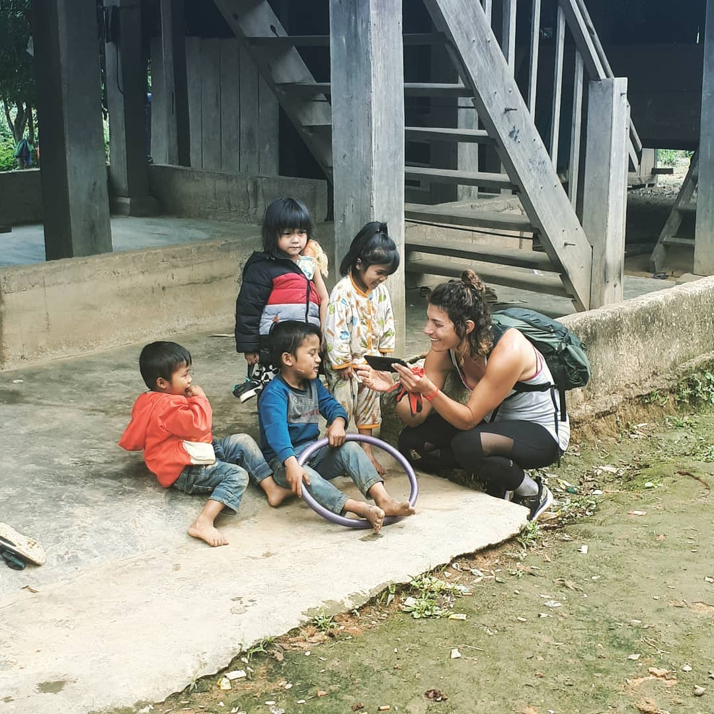
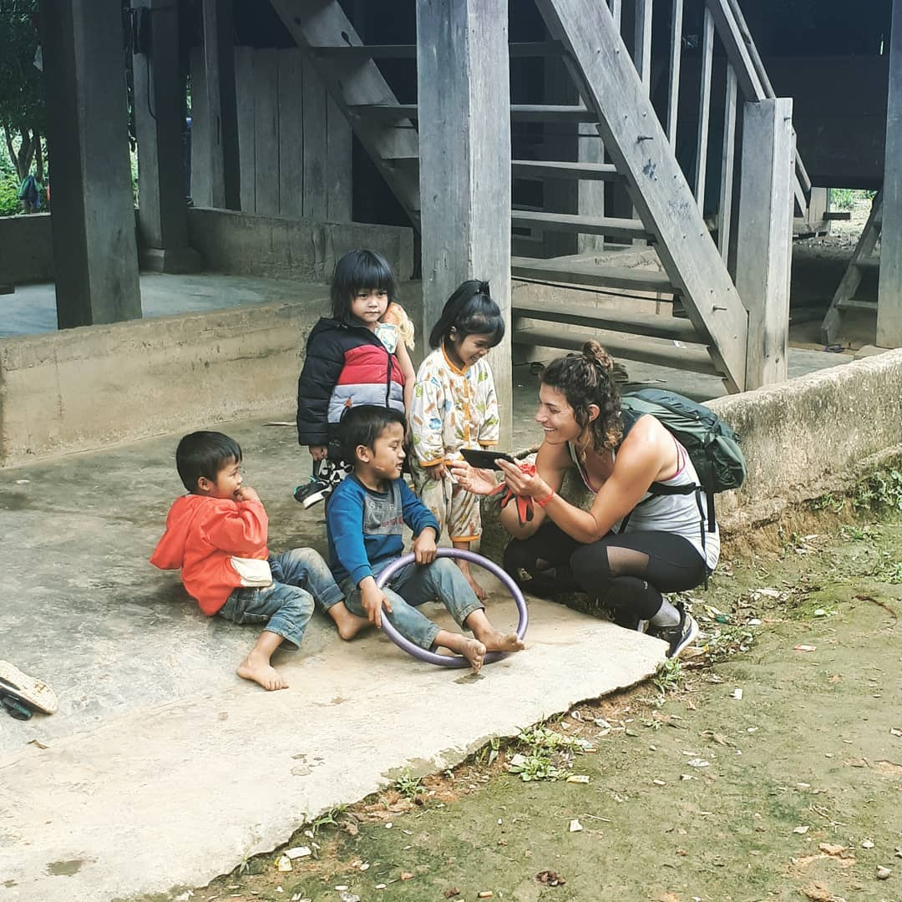

By discovering the world, you discover your true self
CAVE SYSTEM
Hang Tiên
Hang Tiên ở tỉnh Quảng Bình được một người dân địa phương phát hiện hồi tháng 7/2015 và được đặt tên theo truyền thuyết những tiên nữ giáng trần mải thưởng ngoạn mà quên đường về trời.Tú Làn
Nằm cách Phong Nha chừng 70km về hướng Tây Bắc, Tú Làn xứng đáng là "anh cả" trong hàng chục hang động mới vừa được khám pháHang én
Hang Én là hang động lớn thứ 3 trên thế giới xếp sau Hang Sơn Đoòng (Việt Nam) hang Deer (Malaysia). Hang Én nằm trong khu vực trung tâm của Vườn quốc gia Phong Nha – Kẻ Bàng, Vương quốc hang động của Việt Nam.Hang Va
Hang Va là nơi đặc biệt nhất trên thế giới, bởi trong hang có hệ thống thạch nhũ với khoảng 1000 khối kích thước rất đồng đều. Những thạch nhũ này rất quý giá, rất dễ vỡ và gần như không hề có trên thế giới.Hang Sơn Đoòng
Hang Sơn Đoòng nằm trong vùng lõi của Vường quốc gia Phong Nha – Kẻ Bàng, tỉnh Quảng Bình – là một hang động mới được Hiệp hội nghiên cứu hang động Hoàng gia Anh khám phá và công bố là hang động lớn nhất thế giới trong năm 2009 – 2010.MỨC ĐỘ NGUY HIỂM
Trải nghiệm Nước Nứt 1 ngày
Mức độ mạo hiểm của Hang Nước Nứt là khá dễ và phù hợp cho cả người lớn và trẻ em đang trong điều kiện sức khỏe tốt và thường xuyên luyện tập thể thao, hoạt động ngoài trời. Hãy đảm bảo thể lực của bạn phù hợp với các hoạt động sau cho chuyến đi:
- 5 km đi bộ trong rừng với địa hình không bằng phẳng
- Đi 2 km và lội nước trong hang, qua sông (mức nước cao từ đầu gối đên ngang hông, nhiệt độ nước ~17 độ C)
- Bơi các quãng ngắn (vào thời điểm từ tháng 2 đến tháng 4 hằng năm)
- 1 ngày trong hang động và rừng của Vườn quốc gia Phong Nha, Kẻ Bàng
Trải nghiệm Tú Làn
Hãy đảm bảo thể lực của bạn phù hợp với các hoạt động sau cho chuyến đi.
- Vượt 9km rừng núi với địa hình không bằng phẳng
- Leo dốc cao khoảng 150m (chiều cao từ thung lũng cho đến đỉnh núi)
- Bơi 50m trong hang
- Đi 1km trong hang
-
Điều kiện tham gia:
- Có kinh nghiệm cơ bản về đi trek
- Cần biết bơi
Thử sức Tú Làn
Hãy đảm bảo thể lực của bạn phù hợp với các hoạt động sau cho chuyến đi.
- Vượt 12km rừng núi với địa hình không bằng phẳng
- Leo dốc cao khoảng 150m (chiều cao từ thung lũng cho đến đỉnh núi)
- Bơi 1km trong hang
- Đi 3km trong hang
-
Điều kiện tham gia:
- Có kinh nghiệm cơ bản về đi trek
- PHẢI biết bơi
Khám phá Hang Tiên
Hãy đảm bảo thể lực của bạn phù hợp với các hoạt động sau cho chuyến đi.
- Vượt 4km rừng núi với địa hình đá
- Đi 4 km khám phá hang
- Điều kiện tham gia:
Có kỹ năng trekking cơ bản
Khám phá Tú Làn
Hãy đảm bảo thể lực của bạn phù hợp với các hoạt động sau cho chuyến đi.
- Vượt 17km rừng núi với địa hình không bằng phẳng
- Leo dốc cao khoảng 150m (chiều cao từ thung lũng cho đến đỉnh núi)
- Bơi 1km trong hang (mỗi hang khoảng 200m – 500m)
- Đi 4km trong hang
- 3 ngày / 2 đêm trong rừng và hang động
-
Điều kiện tham gia:
- Có kinh nghiệm cơ bản về đi trek
- PHẢI biết bơi
Khám phá Hang Én
Hãy đảm bảo thể lực của bạn phù hợp với các hoạt động sau cho chuyến đi.
- Vượt 22km rừng núi với địa hình không bằng phẳng
- Vượt sông (khoảng 30 lần) với mực nước cao tới đầu gối
- Leo dốc cao khoảng 400m (từ đường đến thung lũng)
- Đi 4km trong hang
- 2 ngày / 1 đêm trong rừng và hang động
-
Điều kiện tham gia:
- Kinh nghiệm đi trek và đi bộ 10km/ngày một cách thoải mái
Chinh phục Hang Tiên
Hãy đảm bảo thể lực của bạn phù hợp với các hoạt động sau cho chuyến đi.
- Vượt 13km đường rừng với địa hình núi đá không bằng phẳng
- Đi 4 km khám phá hang
- Điều kiện tham gia:
Có kỹ năng trekking cơ bản
Thám hiểm Hang Tiên
Hãy đảm bảo thể lực của bạn phù hợp với các hoạt động sau cho chuyến đi.
- Vượt 22km đường rừng với địa hình núi đá không bằng phẳng
- Đi 6.5km trong hang
- Leo dốc cao khoảng 150m (chiều cao từ thung lũng cho đến đỉnh núi)
- Cắm trại 3 ngày 2 đêm trong rừng
- Điều kiện tham gia:
Có kỹ năng trekking cơ bản
Thám hiểm Hang Va
Hãy đảm bảo thể lực của bạn phù hợp với các hoạt động sau cho chuyến đi.
- Vượt 10km rừng núi với địa hình không bằng phẳng
- Đi 3km và lội nước trong hang (mực nước có đoạn cao tới ngực, nhiệt độ nước khoảng 17 độ C)
- Leo dốc cao khoảng 150m (từ đường đến đỉnh núi)
- Vượt chướng ngại vật cao 20m với sự hỗ trợ của dây thừng và dây đai
- 2 ngày / 1 đêm trong rừng và hang động
- Điều kiện tham gia:
Có kỹ năng trekking cơ bản
Thám hiểm Tú Làn
Chuyến Thám hiểm Tú Làn được coi là khá khó, chỉ dành cho khách có sức khỏe tốt và hường xuyên hoạt động thể thao ngoài trời và có kinh nghiệm đi trek. Bạn phải biết bơi để tham gia hành trình này. Hãy đảm bảo thể lực của bạn phù hợp với các hoạt động sau cho chuyến đi:
- Vượt 30km rừng núi với địa hình không bằng phẳng
- Đi 5km trong hang
- Bơi 800m trong các hang (mỗi hang khoảng 100m - 300m)
- Leo dốc cao khoảng 300m (tổng đường dốc 1750m từ thung lũng cho đến đỉnh núi)
- 1 lần đu dây trong hang tối
- 4 ngày / 3 đêm trong rừng và hang động
Thám hiểm Sơn Đoòng
Chuyến Thám hiểm Tú Làn được coi là khá khó, chỉ dành cho khách có sức khỏe tốt và hường xuyên hoạt động thể thao ngoài trời và có kinh nghiệm đi trek. Bạn phải biết bơi để tham gia hành trình này. Hãy đảm bảo thể lực của bạn phù hợp với các hoạt động sau cho chuyến đi:
- 4 ngày 3 đêm trong rừng và hang động
- Vượt hơn 25km rừng núi với địa hình không bằng phẳng
- Thám hiểm 9km trong hang bao gồm sử dụng dây để leo qua các dốc đá (bao gồm việc leo 90m lên Bức tường Việt Nam)
- Leo dốc cao khoảng 400m
- Elevation change up to 400m
- Lội suối/băng sông ngầm trong hang
The largest cave on Planet Earth

Tu Lan Expedition
Việt Nam trong phim 'Kong Skull Island'

 
